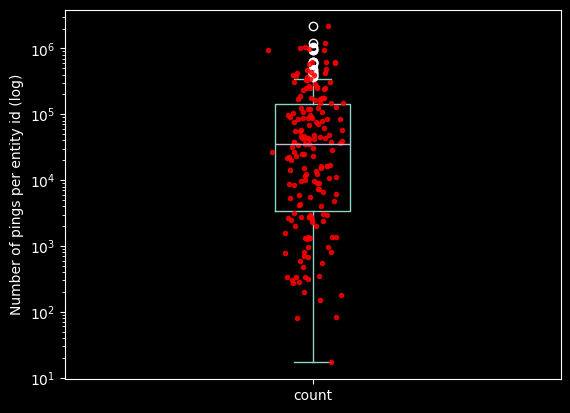

import datetime as dt
import io
import zipfile
from copy import deepcopy
from pathlib import Path
import altair as alt
import geopandas as gpd
import git
import h3
import matplotlib.pyplot as plt
import numpy as np
import pandas as pd
import requests
from IPython.display import Image
from shapely import Polygon
from tqdm import tqdm
plt.style.use('dark_background')
alt.renderers.set_embed_options(theme="dark")
KEPLER_OUTPUT = False # for blog visualisation: set to true if running on jupyter notebookWhen investigating a large dataset of pings (which are the point of a trajectory, with latitude, longitude and timestamp attributes), it can be impractical or useless to try to show all the entries on a map at once.
In his blog post I present a simple trick to aggregate pings into space and time bins, leveraging on the ubiquitous Uber H3 Spatial Indexing. This helps visualizing where and when a dataset is distributed on a map, as done below:
This example uses the open source Geolife dataset. After parsing it and adding a minimal EDA, I bin all the pings in space with H3, and in time with a fixed length time window. In the last step the resulting dataset profile is then plotted with KeplerGl.
As for any of the posts in this blog, the text is sourced directly from a jupyter notebook, and all the results are reproducible with your local python environment.
Outline
- Section 1 python environment setup
- Section 2 Download geolife dataset
- Section 3 Load the dataset
- Section 4 Exploratory data analysis (EDA)
- Section 5 Space-time binning with H3
- Section 6 Dataset profile visualisation
Tip
To create the .gif animation on mac, take a scree recording with a software like QuickTime player video.mov, then following this guide, run the command:
ffmpeg -i video.mov -pix_fmt rgb8 -r 10 output.gif && gifsicle -O3 output.gif -o output.gifMaking sure that you have ffmpeg and gifsicle installed beforehand:
brew install ffmpeg
brew install gifsiclePython environment setup
Create a virtualenvironment and install the required libraries.
Suggested lightweight method:
virtualenv venv -p python3.11
source venv/bin/activate
pip install -r https://raw.githubusercontent.com/SebastianoF/GeoDsBlog/master/posts/gds-2024-06-20-dataset-profiling/requirements.txtWhere the requirement file is sourced directly from the repository, and contains the following libraries and their pinned dependencies:
altair==5.3.0
geopandas==0.14.4
gitpython==3.1.43
h3==3.7.7
keplergl==0.3.2
matplotlib==3.9.0
pyarrow==16.1.0
tqdm==4.66.4You can look under requirements.txt in the repository for the complete file.
Download the dataset
The dataset can be downloaded manually, or running the following commands:
url_download_geolife_dataset = "https://download.microsoft.com/download/F/4/8/F4894AA5-FDBC-481E-9285-D5F8C4C4F039/Geolife%20Trajectories%201.3.zip"
try:
path_root = Path(git.Repo(Path().cwd(), search_parent_directories=True).git.rev_parse("--show-toplevel"))
except (git.exc.InvalidGitRepositoryError, ModuleNotFoundError):
path_root = Path().cwd()
path_data_folder = path_root / "z_data"
path_data_folder.mkdir(parents=True, exist_ok=True)
path_unzipped_dataset = path_data_folder / "Geolife Trajectories 1.3"
if not path_unzipped_dataset.exists():
r = requests.get(url_download_geolife_dataset)
z = zipfile.ZipFile(io.BytesIO(r.content))
z.extractall(path_data_folder)
print("Dataset ready")Dataset readyLoad Dataset
The folder structure of the Geolife dataset is not as linear as it could be.
- The trajectories are divided into 182 folders numbered from
000to181. - Each folder contains a subfolder called
Trajectorycontaining a series of.pltfiles. - Some folders also contain a file called
labels.txt, containing time intervals and transportation modes. - There are two different datetime formats.
- Within the zip folder there is also a pdf file with the dataset description.
To load the files I implemented a class to load the files and enrich them with the labels when they are available. The time formats are converted to pandas datetimes1.
The main parser method has also a boolean flag parse_only_if_labels. False by default, when set to True only the files with the labels are parsed.
# Columns names
COLS_TRAJECTORY = [
"latitude",
"longitude",
"none",
"altitude",
"date_elapsed",
"date",
"time",
]
COLS_TRAJECTORY_TO_LOAD = [
"latitude",
"longitude",
"altitude",
"date",
"time",
]
COLS_LABELS = [
"start_time",
"end_time",
"transportation_mode",
]
COLS_RESULTS = [
"entity_id",
"latitude", # degrees
"longitude", # degrees
"altitude", # meters (int)
"timestamp", # UNIX (int)
"transport", # only if the labels.txt file is there
]
# Format codes
LABELS_FC = "%Y/%m/%d %H:%M:%S"
TRAJECTORY_FC = "%Y-%m-%d %H:%M:%S"
class GeoLifeDataLoader:
def __init__(self, path_to_geolife_folder: str | Path) -> None:
self.pfo_geolife = path_to_geolife_folder
pfo_data = Path(self.pfo_geolife) / "Data"
self.dir_per_subject: dict[int, Path] = {int(f.name): f for f in pfo_data.iterdir() if f.is_dir()}
def to_pandas_per_device(
self,
device_number: int,
leave_progressbar=True,
) -> tuple[pd.DataFrame]:
path_to_device_folder = self.dir_per_subject[device_number]
pfo_trajectory = path_to_device_folder / "Trajectory"
pfi_labels = path_to_device_folder / "labels.txt"
df_labels = None
df_trajectory = None
list_trajectories = [plt_file for plt_file in pfo_trajectory.iterdir() if str(plt_file).endswith(".plt")]
list_dfs = []
for traj in tqdm(list_trajectories, leave=leave_progressbar):
df_sourced = pd.read_csv(traj, skiprows=6, names=COLS_TRAJECTORY, usecols=COLS_TRAJECTORY_TO_LOAD)
df_sourced["altitude"] = df_sourced["altitude"].apply(lambda x: x * 0.3048) # feets to meters
df_sourced["timestamp"] = df_sourced.apply(
lambda x: dt.datetime.strptime(x["date"] + " " + x["time"], TRAJECTORY_FC),
axis=1,
)
df_sourced = df_sourced.assign(entity_id=f"device_{device_number}", transport=None)
df_sourced = df_sourced[COLS_RESULTS]
list_dfs.append(df_sourced)
df_trajectory = pd.concat(list_dfs)
if pfi_labels.exists():
df_labels = pd.read_csv(pfi_labels, sep="\t")
df_labels.columns = COLS_LABELS
df_labels["start_time"] = df_labels["start_time"].apply(lambda x: dt.datetime.strptime(x, LABELS_FC))
df_labels["end_time"] = df_labels["end_time"].apply(lambda x: dt.datetime.strptime(x, LABELS_FC))
if df_labels is not None:
for _, row in tqdm(df_labels.iterrows(), leave=leave_progressbar):
mask = (df_trajectory.timestamp > row.start_time) & (df_trajectory.timestamp <= row.end_time)
df_trajectory.loc[mask, "transport"] = row["transportation_mode"]
return df_trajectory, df_labels
def to_pandas(self, parse_only_if_labels: bool = False) -> pd.DataFrame:
list_dfs_final = []
for idx in tqdm(self.dir_per_subject.keys()):
df_trajectory, df_labels = self.to_pandas_per_device(idx, leave_progressbar=False)
if parse_only_if_labels:
if df_labels is not None:
list_dfs_final.append(df_trajectory)
else:
pass
else:
list_dfs_final.append(df_trajectory)
return pd.concat(list_dfs_final)Load and save to parquet
To speed up next loading phase, I save to parquet after loading from the .plt files the first time.
In this way it will take less time to reload the dataset to continue the analysis.
path_complete_parquet = path_data_folder / "GeolifeTrajectories.parquet"
if not path_complete_parquet.exists():
# this takes about 5 minutes
gdl = GeoLifeDataLoader(path_unzipped_dataset)
df_geolife = gdl.to_pandas(parse_only_if_labels=True)
df_geolife = df_geolife.reset_index(drop=True)
df_geolife.to_parquet(path_complete_parquet)# this takes 2 seconds (MAC book air, 8GB RAM)
df_geolife = pd.read_parquet(path_complete_parquet)
print(df_geolife.shape)
df_geolife.head()(12517364, 6)| entity_id | latitude | longitude | altitude | timestamp | transport | |
|---|---|---|---|---|---|---|
| 0 | device_104 | 39.930748 | 116.306143 | 0.0 | 2008-08-16 07:47:56 | None |
| 1 | device_104 | 39.930792 | 116.306167 | 0.0 | 2008-08-16 07:47:57 | None |
| 2 | device_104 | 39.931093 | 116.306342 | 0.0 | 2008-08-16 07:48:00 | None |
| 3 | device_104 | 39.930950 | 116.306313 | 0.0 | 2008-08-16 07:48:05 | None |
| 4 | device_104 | 39.930963 | 116.306383 | 0.0 | 2008-08-16 07:48:10 | None |
Exploratory data analysis (EDA)
map_unique_values = {}
for col in df_geolife.columns:
map_unique_values.update({col: df_geolife[col].nunique()})
df_unique_values = pd.Series(map_unique_values).to_frame(name="unique values")
del map_unique_values
df_unique_values.head(len(df_geolife.columns))| unique values | |
|---|---|
| entity_id | 69 |
| latitude | 3156361 |
| longitude | 3287728 |
| altitude | 692084 |
| timestamp | 9756930 |
| transport | 11 |
sum_na = df_geolife.isna().sum()
sum_na_perc = ((100 * df_geolife.isna().sum()) / len(df_geolife)).apply(lambda x: f"{round(x, 1)} %")
pd.concat([sum_na.to_frame(name="num nan"), sum_na_perc.to_frame(name="percentage")], axis=1)| num nan | percentage | |
|---|---|---|
| entity_id | 0 | 0.0 % |
| latitude | 0 | 0.0 % |
| longitude | 0 | 0.0 % |
| altitude | 0 | 0.0 % |
| timestamp | 0 | 0.0 % |
| transport | 7083278 | 56.6 % |
print(f"time covered: {df_geolife['timestamp'].min()} -> {df_geolife['timestamp'].max()}")
print(f"Number of devices: {len(df_geolife['entity_id'].unique())}")
print(f"Number of pings: {len(df_geolife)}")
print(f"Avg pings per device: {round( len(df_geolife) / len(df_geolife['entity_id'].unique()) , 2):_}")time covered: 2000-01-01 23:12:19 -> 2012-07-27 08:31:20
Number of devices: 69
Number of pings: 12517364
Avg pings per device: 181_411.07se_devices_count = df_geolife["entity_id"].value_counts().sort_values(ascending=False)
ax = se_devices_count.plot.box()
ax.set_yscale('log')
ax.plot(np.random.normal(1, 0.03, size=len(se_devices_count)), se_devices_count.to_numpy(), 'r.', alpha=0.8)
ax.set_ylabel("Number of pings per entity id (log)")
quantiles = se_devices_count.quantile([.25, .5, .75]).to_list()
print(f"quantiles: {quantiles[0]} - {quantiles[1]} - {quantiles[2]}" )quantiles: 1985.0 - 23606.0 - 172547.0
Examine the outliers
print(f"longitude interval: {df_geolife['longitude'].min()}, {df_geolife['longitude'].max()}")
print(f"latitude interval: {df_geolife['latitude'].min()}, {df_geolife['latitude'].max()}")
df_lon_out_of_range = df_geolife[(df_geolife['longitude'] > 180) | (df_geolife['longitude'] < -180)]
df_lat_out_of_range = df_geolife[(df_geolife['latitude'] > 90) | (df_geolife['latitude'] < -90)]
print(f"Number of longitudes out of range {len(df_lon_out_of_range)} ({round(100 * len(df_lon_out_of_range) / len(df_geolife), 10)} %)")
print(f"Number of latitudes out of range {len(df_lat_out_of_range)} ({round(100 * len(df_lat_out_of_range) / len(df_geolife), 10)} %)")longitude interval: -179.9695933, 179.9969416
latitude interval: 1.044024, 400.166666666667
Number of longitudes out of range 0 (0.0 %)
Number of latitudes out of range 1 (7.9889e-06 %)There is only one ping outsie the standard lat lon range.
- In general, out of range pings has to be observed individually to understand their origin. They can be legit and going out of range devices crossing the antimeridian, or they can be results of faulty correction algorithms, data type wrongly conversion, or others unknowns.
- In this case, we have only one point that is out of range, and the goal of the post is how to create a profile for the dataset, so I drop it without feeling too much guilt about it.
df_geolife = df_geolife[(df_geolife['longitude'] <= 180) & (df_geolife['longitude'] >= -180) & (df_geolife['latitude'] <= 90) & (df_geolife['latitude'] >= -90)]Space-time binning with H3
In this section I:
- Bin the dataset in time with a fixed time interval.
- Bin the dataset in space with h3.
- Combine the time and space indexes in a bin index.
- Group by the pings over the index and compute their size.
- Use h3 to add the geometry of each row, turning the dataframe into a geodataframe.
H3_RESOLUTION = 8
TIME_RESOLUTION = "48h"# 2 mins 50
df_geolife["time_bins"] = df_geolife.set_index("timestamp").index.floor(TIME_RESOLUTION)
df_geolife["h3"] = df_geolife.apply(lambda row: h3.geo_to_h3(row["latitude"], row["longitude"], H3_RESOLUTION), axis=1)
df_geolife.head()| entity_id | latitude | longitude | altitude | timestamp | transport | time_bins | h3 | |
|---|---|---|---|---|---|---|---|---|
| 0 | device_104 | 39.930748 | 116.306143 | 0.0 | 2008-08-16 07:47:56 | None | 2008-08-15 | 8831aa51bbfffff |
| 1 | device_104 | 39.930792 | 116.306167 | 0.0 | 2008-08-16 07:47:57 | None | 2008-08-15 | 8831aa51bbfffff |
| 2 | device_104 | 39.931093 | 116.306342 | 0.0 | 2008-08-16 07:48:00 | None | 2008-08-15 | 8831aa51bbfffff |
| 3 | device_104 | 39.930950 | 116.306313 | 0.0 | 2008-08-16 07:48:05 | None | 2008-08-15 | 8831aa51bbfffff |
| 4 | device_104 | 39.930963 | 116.306383 | 0.0 | 2008-08-16 07:48:10 | None | 2008-08-15 | 8831aa51bbfffff |
# 30 seconds
df_bins_space_time = pd.Series(df_geolife["time_bins"].astype(str) + "_" + df_geolife["h3"]).to_frame(name="bins").groupby("bins").size().to_frame(name="count")
df_bins_space_time.head()| count | |
|---|---|
| bins | |
| 1999-12-31_8831aa50c5fffff | 2 |
| 1999-12-31_8831aa50cdfffff | 1 |
| 2007-04-11_8831aa5081fffff | 9 |
| 2007-04-11_8831aa5085fffff | 4 |
| 2007-04-11_8831aa5087fffff | 21 |
df_bins_space_time["timestamp"] = pd.to_datetime(df_bins_space_time.index.map(lambda x: x.split("_")[0]))
df_bins_space_time["h3"] = df_bins_space_time.index.map(lambda x: x.split("_")[1])
df_bins_space_time.head()| count | timestamp | h3 | |
|---|---|---|---|
| bins | |||
| 1999-12-31_8831aa50c5fffff | 2 | 1999-12-31 | 8831aa50c5fffff |
| 1999-12-31_8831aa50cdfffff | 1 | 1999-12-31 | 8831aa50cdfffff |
| 2007-04-11_8831aa5081fffff | 9 | 2007-04-11 | 8831aa5081fffff |
| 2007-04-11_8831aa5085fffff | 4 | 2007-04-11 | 8831aa5085fffff |
| 2007-04-11_8831aa5087fffff | 21 | 2007-04-11 | 8831aa5087fffff |
# 15 seconds - 1.2million rows
geometry=list(df_bins_space_time["h3"].apply(lambda x: Polygon(h3.h3_to_geo_boundary(x, geo_json=True))))
gdf_bins_space_time = gpd.GeoDataFrame(df_bins_space_time, geometry=geometry)
print(gdf_bins_space_time.shape)
gdf_bins_space_time.head()(252683, 4)| count | timestamp | h3 | geometry | |
|---|---|---|---|---|
| bins | ||||
| 1999-12-31_8831aa50c5fffff | 2 | 1999-12-31 | 8831aa50c5fffff | POLYGON ((116.32271 39.99250, 116.32038 39.988... |
| 1999-12-31_8831aa50cdfffff | 1 | 1999-12-31 | 8831aa50cdfffff | POLYGON ((116.32234 39.99982, 116.32001 39.995... |
| 2007-04-11_8831aa5081fffff | 9 | 2007-04-11 | 8831aa5081fffff | POLYGON ((116.33853 39.98014, 116.33620 39.976... |
| 2007-04-11_8831aa5085fffff | 4 | 2007-04-11 | 8831aa5085fffff | POLYGON ((116.33118 39.97534, 116.32885 39.971... |
| 2007-04-11_8831aa5087fffff | 21 | 2007-04-11 | 8831aa5087fffff | POLYGON ((116.33890 39.97282, 116.33657 39.968... |
Dataset profile visualisation
Now that we have the the geolife dataset binned in space and time we can visualise the results with KeplerGl.
import json
from pathlib import Path, PosixPath
from keplergl import KeplerGl
class KeplerConfigManager:
"""Save, load and list config files for KeplerGl"""
def __init__(self, path_to_folder: PosixPath | None= None):
if path_to_folder is None:
path_to_folder = Path().cwd() / "kepler_configs"
self.path_to_folder = path_to_folder
self.path_to_folder.mkdir(parents=True, exist_ok=True)
@staticmethod
def _check_name(name_config: str):
if name_config.endswith(".json"):
raise ValueError("Name of the config must not include the extension '.json' .")
def _parse_name(self, name_config: str) -> PosixPath:
return self.path_to_folder / (name_config + ".json")
def list_available_configs(self):
return [f.stem for f in self.path_to_folder.glob("*.json")]
def save_config(self, k_map: KeplerGl, name_config: str):
self._check_name(name_config)
with self._parse_name(name_config).open("w+", encoding="UTF-8") as file_target:
json.dump(k_map.config, file_target, indent=4)
def load_config(self, name_config: str):
self._check_name(name_config)
return json.loads(self._parse_name(name_config).read_text(encoding="UTF-8"))
kcm = KeplerConfigManager()config_map = kcm.load_config("configs_map_binning")
if KEPLER_OUTPUT:
map1 = KeplerGl(
data=deepcopy(
{
"hex_binning": gdf_bins_space_time[gdf_bins_space_time["timestamp"].dt.year > 2008].reset_index(drop=True).drop(columns=["h3"]), # limit to the first 200_000
}
),
config=config_map,
height=800
)
display(map1)
else:
display(Image("images/dataset_profile.png"))if False: # overwrite kepler map configs
kcm.save_config(map1, "configs_map_binning")